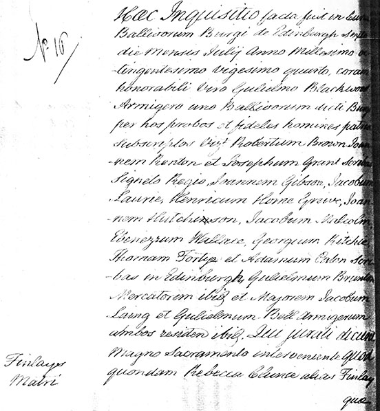
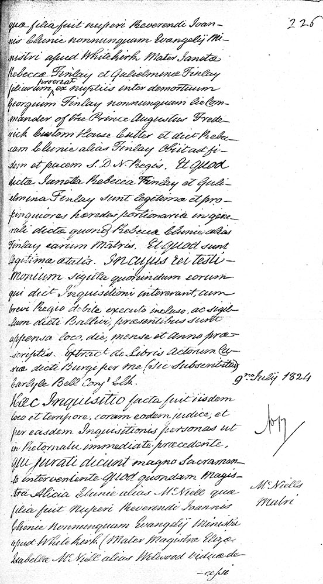
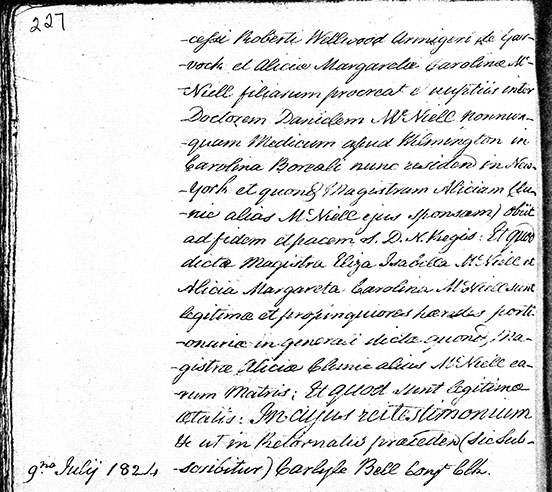

Appendix H
Services of Heirs for Finlays Matri and McNeills Matri1
The Service of Heirs is a Scottish law that confirms the legitimacy of the children of a deceased parent, thus making them eligible to be that parent’s heir.2
Page 225

Latin Transcription
Hæc Inquisitio facta fuit in Curia |
|
No. 16 |
Ballivorum Burgi de Edinburgh sexto |
die mensis Julij anno millesimo oc- |
|
-tingentesimo vigesimo quarto, coram |
|
honorabili viro Gulielmo Blackwood |
|
Armigero uno Ballivorum dicti Burgi |
|
per nos probos et fideles homines patriæ |
|
subscriptos viz3 Robertum Brown, Joan |
|
-nem Renton et Josephum Grant scribas |
|
Signeto Regio, Joannem Gibson, Jacobum |
|
Laurie, Henricum Horne Greive, Joan |
|
nem Hutchinson,4 Jacobum Malcolm, |
|
Ebenezerum Wallace, Georgium Ritchie, |
|
Thomam Fortye et Adamum Paton scri- |
|
-bas in Edinburgh, Gulielmum Brunton |
|
Mercatorem ibid5 et Majorem Jacobum |
|
Laing et Gulielmum Bell armigerum |
|
Finlays |
magno sacramento interveniente quod |
Matri |
quondam Rebecca Clunie alias Finlay |
| quæ |
English Translation
No. 16 – Finlay Mother
This inquiry was made in the court
of the bailiffs of the burgh8 of Edinburgh, on the sixth
day of the month of July eighteen-
twenty-four, before
the honourable man William Blackwood
esquire,9 one of the bailiffs of the said burgh,
by us, the undersigned honest men, faithful to the nation,
namely, the clerks10 Robert Brown, John
Renton, and Joseph Grant;
by the royal seal the clerks John Gibson, Jacob
Laurie, Henry Horne Greive, John
Hutchison, Jacob Malcolm,
Ebenezer Wallace, George Ritchie,
Thomas Fortye, and Adam Patron
in Edinburgh; William Brunton
a merchant in the same place; and Major Jacob
Laing and William Bell esquire,
both residing in the same place,
who, called to witness, declare
under oath11 that
the late Rebecca Clunie, also known as Finlay,
Page 226

Latin Transcription
quæ filia fuit nuperi Reverendi Joan- |
225 |
nis Clunie nonnunquam Evangelij Mi- |
|
nistri apud Whitekirk Mater Janetæ |
|
Rebeccæ Finlay et Gulielminæ Finlay |
|
filiarum procreat12 ex nuptiis inter demortuum |
|
Georgium Finlay nonnunquam lie13 Com- |
|
mander of the Prince Augustus Frede- |
|
rick Custom House Cutter et dict14 Rebec- |
|
-cam Clunie alias Finlay obiit ad fi- |
|
-dem et pacem S. D. N.15 Regis. Et quod |
|
dictæ Janetta Rebecca Finlay et Guli- |
|
elmina Finlay sunt legitimæ et pro- |
|
pinquiores hæredes portionariæ in gene- |
|
rali dictæ quond16 Rebeccæ Clunie alias |
|
Finlay earum matris. Et quod sunt |
|
legitimæ ætatis. In cujus rei testi- |
|
monium sigilla quorundam eorum |
|
qui dict17 Inquisitioni intererant, cum |
|
brevi Regio debite executo incluso, ac sigil- |
|
-lum dicti Ballivi, præsentibus sunt |
|
appensa loco, die, mense et anno præ- |
|
scriptis. Extract18 de Libris actorum Cu- |
|
riæ dicti Burgi per me (sic subscribitur) |
|
| 9no July 1824 | |
Haec Inquisitio facta fuit iisdem |
|
loco et tempore, coram eodem judice, et |
|
per easdem Inquisitionis personas ut |
No. 17 |
in Retornatu immediate præcedente, |
|
qui jurati dicunt magno sacramen- |
|
-to interveniente, quod quondam Magis- |
|
-tra Alicia Clunie alias McNiell quæ |
McNiells |
filia fuit nuperi Reverendi Joannis |
Matri |
Clunie nonnunquam Evangelij Ministri |
|
apud Whitekirk (mater Magistræ Elizæ |
|
Isabellæ McNiell alias Welwood, viduæ de |
|
| -cessi |
English Translation
who was the daughter of the late21 Reverend Jo-
hn Clunie, sometime minister of the Gospel
at Whitekirk, and the mother of Janet
Rebecca Finlay and Wilhelmina Finlay,
daughters whom she begot from the marriage between the late
George Finlay, sometime lieutenant Com-
mander of the Prince Augustus Frede-
rick Custom House Cutter, and the said Rebec-
ca Clunie a.k.a. Finlay, died in the fa-
ith and peace of the Holy Lord Our King. And that
the said Janet Rebecca Finlay and Wil-
helmina Finlay are the legitimate and clo-
sest heirs, beneficiaries in gen-
eral of the said late Rebecca Clunie a.k.a.
Finlay, their mother, and that they are
legitimate forever. In testimony of which matter
the seals of those
who were present for the said inquiry, with
the king’s letter, duly executed, included, and
the seal of the said bailiff, by those present are
attached at the place and on the day, month, and year as writ-
ten above. Extracted from the Books of the acts of the
Court of the said burgh by me (thus signed)
Carlyle Bell Conjt Clk(?).
No. 17 – McNeill Mother
This inquiry was made in the same
place and at the same time, before the same judge, and
by the same people of the inquiry
as above,22
who, called to witness, declare under
oath that the late Mis-
tress23 Alice Clunie also known as McNiell, who
was the daughter of the late Reverend John
Clunie, sometime minister of the Gospel
at Whitekirk (the mother of Mistress Eliza
Isabella McNiell also known as Wellwood, the widow of the
Page 227

Latin Transcription
-cessi Roberti Wellwood armigeri de Gar- |
|
-vock et Aliciæ Margaretæ Carolinæ Mc- |
|
-Niell filiarum procreat e24 nuptiis inter |
|
Doctorem Danielem McNiell nonnun- |
|
-quam Medicum apud Wilmington in |
|
Carolina Boreæli nunc residen25 in New- |
|
-York et quond26 Magistram Aliciam Clu- |
|
-nie alias McNiell ejus sponsam) obiit |
|
ad fidem et pacem S. D. N.27 Regis. Et quod |
|
dictæ Magistra Eliza Isabella McNiell et |
|
Alicia Margareta Carolina McNiell sunt |
|
legitimæ et propinquiores hæredes porti- |
|
-onariæ in generali dictæ quond28 Ma- |
|
gistræ Aliciæ Clunie alias McNiell ea- |
|
-rum matris; Et quod sunt legitimæ |
|
ætatis. In cujus rei testimonium |
|
9no July 1824 |
-scribitur) Carlyle Bell Conjt Clk [?]. |
English Translation
late Robert Wellwood esquire of Gar-
vock; and of Alice Margaret Caroline Mc-
Niell, daughters whom she begot from the marriage between
Doctor Daniel McNiell, some-
time medic in Wilmington in
North Carolina, now living in New
York, and the late Mistress Alice Clu-
nie aka McNiell his wife) died
in the faith and peace of the Holy Lord Our King. And that
the said Mistress Eliza Isabella McNiell and
Alice Margaret Caroline McNiell are
the legitimate and closest heirs, bene-
ficiaries in general of the said late Mis-
tress Alice Clunie aka McNiell the-
ir mother, and that they are legitimate
forever. In testimony of which matter
also as above (thus sig-
ned) Carlyle Bell Conjt Clk[?].
Notes
1 Service of Heirs, C22/121, pp. 226–227, SRO; English translation by Laura Moncion, Centre for Medieval Studies, University of Toronto.
2 “By the law of Scotland, before an heir can regularly acquire a right to the estate of the ancestor, he ought to be served heir: which is one of the old forms of the law of Scotland proceeding upon a writ, and including in it the decision of a jury fixing the right and character of the heir to the estate of the ancestor” (Sir Thomas Edlyne Tomlins, The Law-Dictionary, Explaining the Rise, Progress, and Present State of the British Law, 2 vols. [Edinburgh: John Anderson; London: Saunders & Benning, 1835], vol. 2, s.v. “service of an heir”). See also William Bell, Dictionary and Digest of the Law of Scotland (Edinburgh: John Anderson; London: Saunders & Benning, 1838), pp. 903–907.
3 Abbreviation for: videlicet
4 Written as “Hutchinson” with the “n” then crossed out
5 Abbreviation for: ibid[em]
6 Abbreviation for: residen[tes]
7 Abbreviation for: ibid[em]
8 burgi: this word literally means “castle,” “fort”; it can also mean “city” or “borough.”
9 armiger: this word can also mean “soldier” or “squire” (literally “arms-bearer”)
10 scribas: this word can also mean “scribe.”
11 Literally, “with a great oath taking place.” The word for “oath” used here is sacramentum: this word can also mean “sacrament,” “civil suit or process,” “secret or something to be kept secret.”
12 procreat written in the line above and inserted into the text in this place.
13 I can’t make this out completely from the handwriting, but I’m guessing it is some kind of abbreviation relating to this person’s rank as Commander of what seems to be a ship (?), perhaps an abbreviation for “lieutenant” (if this fits with your knowledge of other comparable documents, e.g. it is also customary for “lieutenant” to be shortened and written beginning with a lower-case letter, as this is, in English-language documents of this kind and period).
14 Abbreviation for: dict[am]
15 Abbreviation for: S[ancti] D[omini] N[ostri]
16 Abbreviation for: quond[am]
17 Abbreviation for: dict[ae]
18 Abbreviation for: Extract[um]
19 conjt: this might be an abbreviation of conicit (i.e. “Carlyle Bell concludes/assigns/classifies”) but since I suspect it is part of this formula (which I am not familiar with) I can’t say with any certainty.
20 I can’t make this out either, but I would guess that it has something to do either with this person’s rank or position, or is part of the formula of this kind of nineteenth-century record. This might be short for “clerk.”
21 nuper: this word can also mean “recent.”
22 literally something like “in returning to the directly preceding,” i.e. the same witnesses as the previous document.
23 magistra: this word can also mean a female “instructor,” “teacher,” “master.”
24 Abbreviation for: e[x]
25 Abbreviation for: residen[tem]
26 Abbreviation for: quond[am]
27 Abbreviation for: S[ancti] D[omini] N[ostri]
28 Abbreviation for: quond[am]
29 What is written in the original text here looks like an abbreviation known as the “Tironian et” (⁊). It is not technically a letter or a set of letters. It expands simply to et (“and”).
30 Abbreviation for: præceden[te]